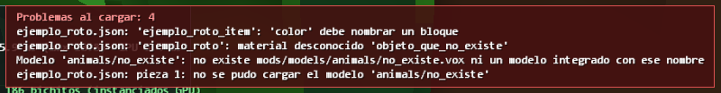

Guía de mods
Cube Unbound está hecho para modificarse: casi todo el contenido son archivos JSON legibles y modelos de MagicaVoxel dentro de la carpeta mods/. No hace falta programar ni recompilar.
mods/ al arrancar: edita un archivo y vuelve a abrir el juego para ver el cambio. Si un archivo tiene un error, el juego lo avisa (qué archivo y qué campo) y sigue funcionando. La recarga sin reiniciar (tecla F4) está prevista, pero todavía no está hecha.
La carpeta mods/
| Carpeta | Qué contiene | Ahora mismo |
|---|---|---|
items/ | Objetos: materiales, bloques, herramientas, armas y equipo. | 812 |
recipes/ | Recetas de fabricación y en qué estación se hacen. | 402 |
mobs/ | Fauna, monstruos, jefes y únicos (un archivo por criatura). | 241 |
factions/ | Personajes de facción con arma y rol. | 57 |
villagers/ | Aldeanos de cada raza. | 6 |
races/ y skills/ | Razas jugables y sus ramas de habilidades. | 10 |
dungeons/ | Mazmorras: bioma, nivel, facción, jefe y bloques. | 16 |
horde/ | Reglas de las hordas y composición por facción. | 11 |
furniture/ | Plantillas de muebles, materiales y piezas de colección. | 114 |
farming/ y fishing/ | Cultivos, peces, cañas y reglas. | 70 |
vehicles/ | Vehículos: piezas, asientos y tipo. | 18 |
structures/ | Estructuras del mundo como modelos .vox. | 20 |
world/ | Peligro por distancia, vetas, dureza, luz y botín de mazmorra. | |
combat/, progression/, player/ | Reglas de daño, experiencia y estadísticas del jugador. | |
equipment/ | Conjuntos de equipo y sus bonos. | 20 |
audio/ | Sonidos y música (.wav) que sustituyen a los sintetizados. | |
models/ | Todos los modelos .vox, por carpetas. | |
ui/ | Consejos de la pantalla de carga. | 14 |
Modelos .vox
- Se hacen con MagicaVoxel y se guardan en
mods/models/…. En los JSON se nombran sin extensión:"model": "animals/wolf_body". - En MagicaVoxel el eje Z es arriba y el frente del modelo mira hacia −Y. El juego lo convierte a sus ejes: +X derecha, +Y arriba, +Z adelante.
- El tamaño de cada vóxel lo fija
voxelSize(en metros; 0,1 en personajes y objetos). Los muebles y estaciones usan 16 vóxeles por bloque. - Las variantes de color cambian índices de la paleta:
{"1": "E8742A"}pinta el color 1 de naranja. Así un mismo modelo da varios pelajes.
Tu primera criatura
Copia un archivo de mods/mobs/, cámbiale el id y ajusta lo que quieras. Este es el conejo real del juego:
{
"id": "bunny",
"name": "Conejo",
"description": "Avanza a saltitos y se para a olfatear con las orejas tiesas.",
"style": "hopper",
"voxelSize": 0.06,
"behavior": "wander",
"tame": {
"food": "berries",
"bites": 2
},
"temper": "passive",
"stats": {
"health": 12,
"armor": 0,
"damage": 2,
"regen": 0.5,
"level": 1
},
"movement": {
"type": "ground",
"speed": 2.6,
"width": 0.4,
"height": 0.5
},
"spawn": {
"count": 3,
"group": 1,
"biomes": [
"plains",
"forest",
"snowy"
]
},
"variants": [
{
"1": "A07850",
"2": "7E5C3C"
},
{
"1": "9C9CA2",
"2": "7A7A82"
}
],
"parts": [
{
"bone": "body",
"model": "animals/bunny_body",
"pivot": [
3,
0,
3.5
],
"at": [
0,
0,
0
]
},
{
"bone": "head",
"parent": "body",
"model": "animals/bunny_head",
"pivot": [
2.5,
0,
1
],
"at": [
0,
3.5,
2.5
]
},
{
"bone": "tail",
"parent": "body",
"model": "animals/bunny_tail",
"pivot": [
1,
1,
2
],
"at": [
0,
2.5,
-3.5
]
}
],
"loot": [
{
"item": "raw_meat",
"min": 1,
"max": 1,
"chance": 0.8
}
]
}| id, name, description | Identificador único (sin espacios), nombre y texto del bestiario. |
|---|---|
| style | Cómo se anima: quadruped, biped, flyer, swim, insect, hopper. |
| temper | passive (huye), defensive (ataca si le atacan) u hostile. |
| stats | Vida, armadura, daño y regeneración base. Con level 1 la criatura toma el nivel de la zona donde aparece; un nivel mayor es fijo (jefes y únicos). |
| movement | Velocidad y tamaño del cuerpo en bloques. type: ground, air (con flyHeight) o water (con depthMin/depthMax); swimmer para las que nadan. |
| spawn | Dónde y cuándo aparece: biomes, caves (estratos), hours, temperature, humidity, count y group. Con count 0 no aparece sola. |
| parts | Las piezas del cuerpo. Cada una tiene un hueso (bone), un modelo, su pivot (punto de giro dentro del modelo, en vóxeles) y at (dónde queda ese punto en el cuerpo, siempre en coordenadas absolutas). mirror refleja la pieza para el lado izquierdo; parent la cuelga de otra. Tiene que haber una pieza body. |
| variants | Hasta 15 recoloreados de la paleta. |
| effects | Lo que causan sus golpes: knockback, bleed, slow, stun, burn, armorPierce, poison, lifesteal, thorns. |
| tame | Comida favorita, bocados y, si se monta, mount con velocidad, salto y altura del asiento. |
| loot | Lista de objetos con cantidad mínima, máxima y probabilidad. |
| boss | Título, escala, radio de la arena y fases (below = fracción de vida a la que cambia; multiplicadores y frase). |
| unique | Lo convierte en enemigo único: biomas, horas, altura y probabilidad. |
Objetos
Cada archivo de mods/items/ es una lista de objetos. Tres ejemplos reales: un arma, una pieza de equipo y una comida.
[
{
"id": "short_sword_iron",
"name": "Espada corta de hierro",
"category": "weapon",
"color": "iron_ore",
"model": "items/short_sword_iron",
"grip": [
1.5,
3.5,
2.0
],
"maxStack": 1,
"weapon": {
"type": "melee",
"style": "slash",
"damage": 10,
"cooldown": 0.45,
"reach": 2.7,
"arc": 90
}
},
{
"id": "leather_helmet",
"name": "Gorro de cuero",
"model": "armor/leather_helmet",
"category": "equipment",
"color": "dirt",
"equip": {
"set": "leather",
"slot": "helmet",
"armor": 3,
"health": 5
}
},
{
"id": "roasted_draconic_meat",
"name": "Carne Dracónica Asada",
"category": "material",
"color": "terracotta_brown",
"maxStack": 64,
"food": {
"heal": 60,
"seconds": 600,
"stats": {
"damage": 0.08
}
}
}
]| category | material, block, tool, weapon o equipment. |
|---|---|
| color | Nombre de un bloque; da el color del icono cuando no hay modelo. |
| model, grip | Modelo .vox y punto por donde se agarra, en vóxeles. |
| weapon | type: melee (con style slash, heavy o thrust, alcance y arco), bow, staff, hitscan o rocket. |
| tool | Tipo, intervalo de minado, grade (qué dureza rompe) y fastOn (bloques en los que es rápida). |
| equip | slot (helmet, chest, legs, boots, wings, ring, amulet, offhand), set y las estadísticas que suma. |
| food | Cura, estamina, maná y mejoras temporales (stats durante seconds). |
| placesBlock, droppedBy | Qué bloque coloca y qué bloques lo sueltan al romperse. |
Recetas
Archivos de mods/recipes/: listas de recetas. Sin station se fabrica a mano.
{
"id": "iron_ingot",
"result": "iron_ingot",
"count": 1,
"station": "forge",
"ingredients": [
{
"item": "iron_ore",
"count": 2
},
{
"item": "coal",
"count": 1
}
]
}Estaciones válidas: workbench (Banco de trabajo), forge (Fragua), anvil (Yunque), loom (Telar), alchemy_cauldron (Caldero de alquimia), runic_forge (Forja Rúnica), elven_forge (Forja Élfica), titan_anvil (Yunque de Sangre de Titán), creation_altar (Altar de la Creación), campfire (Hoguera), cooking_pot (Olla), oven (Horno), barrel (Barril).
Sonido y música
El juego sintetiza todos sus sonidos, así que no necesita ningún archivo. Para cambiar uno, deja un .wav (PCM de 16 bits, 44.100 Hz; mono para efectos, estéreo para música) con el nombre adecuado en mods/audio/sfx/ o mods/audio/music/. La lista completa está en mods/audio/LEEME.txt.
Buenas prácticas
- Usa identificadores propios (por ejemplo con un prefijo) para no chocar con los del juego ni con otros mods.
- Guarda los archivos en UTF-8.
- Prueba cada cambio abriendo el juego antes de seguir.
- Mira la referencia de datos para ver todos los valores que admite cada campo.